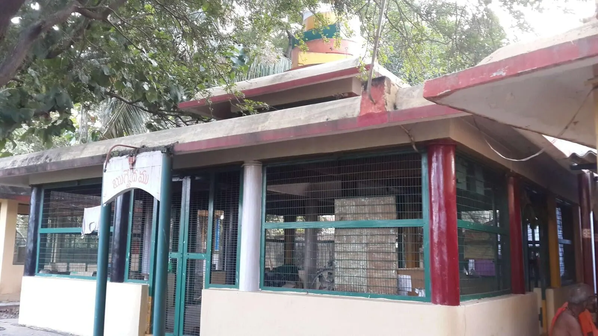

శ్రీ భువనేశ్వరీ పీఠ ఆవిర్భావము
శ్రీ చిదానంద సరస్వతీ స్వాములవారి నిర్యాణము జరిగిన పిదప ధర్మకర్తలు సమావేశమై ఈ యాశ్రమమున ఆచార్య పీఠమును నెలకొల్ప నిశ్చయించిరి. ఒక యతీశ్వరుని పీఠాధిపతిగా జేసి గురు పరంపర కొనసాగింప సంకల్పించిరి. అందులకై ఆచార్యునిగూర్చి అన్వేషించిరి. ఆ సమయమున శ్రీ సత్యానంద భారతీ స్వామివారు విజయవాడలో తురీయాశ్రమము స్వీకరించినట్లు తెలియ వచ్చెను. ధర్మకర్తలు వారిని సమీపించి తమ యాశ్రమములో పీఠాధి పత్యము వహింప బ్రార్ధించిరి. వారంగీకరింప 14-11-1978న వారిని శ్రీ భువనేశ్వరీ పీఠమునకు అధిపతిగా పట్టాభిషేకము చేసిరి.
వీరు పూర్వాశ్రమమున తెనాలి తాలూకా హైస్కూలులో చిర కాలము తెలుగు పండితులుగా బనిచేసియుండిరి. ప్రమాదీ ఆశ్వయుజ శు॥ దశమి - గురువారం 9.10. 1913 వీరు జన్మించిరి. వీరు ఉభయ భాషా ప్రవీణులు. కవి, పండితులు, మార్గదర్శకులు, మంచి రచయిత, విమర్శకులు-శ్రీవిద్యోపాసకులు, నిత్యాగ్ని హోత్రులు, సదాచారపరాయణులు. పెక్కు పాఠ్య గ్రంథ వ్యాఖ్యలను, ఉపవాచకములను రచించి ప్రఖ్యాతి గడించిన సుధీమణులు. ఆ కాలమున “పులిగడ్డ గైడ్స్” అంటే ఎగుర నెత్తుక పోయెడివారు. జగద్గురు శ్రీ కల్యాణానంద భారతీస్వామి వారి ప్రియ శిష్యులైన శ్రీ వడ్లమూడి లక్ష్మీనారాయణగారివద్ద శ్రీ విద్యోప దేశమందిరి. నిత్యము శ్రీ చక్రార్చన చేయుచు ఆచార్యునకు ప్రీతి పాత్రులై, క్రమముగా పూర్ణ దీక్షను పడసిన ధన్య జీవులు. శ్రీ విద్యను సాంగో పాంగముగ ధారణచేసిన యసాధారణ ప్రతిభాసమన్వితులు. కల్ప గ్రంధ నిరపేక్షముగా శ్రీ చక్ర రాజమునకు నవావరణార్చనము నిర్వహించిన ప్రజ్ఞానిధి. వీరు శ్రీ సిద్ధేశ్వరీ (కుర్తాళం) పీఠమునకు ఉత్తరాధికారిగా నెన్నకొనబడిన ప.ప. శ్రీ విమలానంద భారతీ స్వామివారి వద్ద 12-10-1978న తురీయాశ్రమము స్వీకరించి ప్రణోవోపదేశము పొందిరి.
వీరు పీఠాధిపత్యము వహించిన వెంటనే ఆశ్రమమున శ్రీ చక్ర రాజమును ప్రతిష్టించిరి. పిమ్మట శ్రీ విమలానంద భారతీస్వామి వారు పంపిన శ్రీ భువనేశ్వరీ దేవి యొక్క శిలా విగ్రహమును శ్రీ చక్రాకృతితో నిర్మించిన మండపములో 7-10-1979న ప్రతిష్టించిరి. ఆ పీఠమునకు “శ్రీ భువనేశ్వరీ పీఠ”మని నామకరణమొనరించిరి. తదాది శ్రీ భువనేశ్వరీ సహితముగా శ్రీ చక్ర రాజమునకు నిత్యార్చన - మధ్యాహ్న వేళలందు తీర్థ ప్రసాద వినియోగము, పూర్ణిమలందు సవావరణార్చనము మొదలైన పీఠ సంప్రదాయములు ప్రవేశ పెట్టబడినవి. భక్తుల కోర్కెననుసరించి పాద పూజలు - భిక్షావందనములు ఆచరణలోనికి వచ్చినవి. అనతి కాలముననే పీఠము రూపసౌందర్యమును సంతరించుకొనినది.
పిమ్మట రెండు మూడు సంవత్సరములలోనే ఆశ్రమమునకు ప్రాకారము, ఋతు రసాగ్ని (367) లింగాత్మక రుద్ర మండల ప్రతిష్ట, పంచముఖాంజనేయ ప్రతిష్ట, శ్రీ నాగేంద్రస్వామి ప్రతిష్టయు జరిగెను. మరియు ఆగ్నేయ భాగమున షోడశస్తంభ విలసితమైన శాశ్వత యాగ శాలయు నిర్మింపబడెను. ఈ యాశ్రమము వీరి హయాములో గొప్ప అభివృద్ధిని చూరగొనెను. దేవతార్చన కుసుమములకై ఒక పూదోట కూడ పెంచబడెను. రోజు రోజునకా పీఠ ప్రభావము పలువురికి విదితమైనది. శిష్యపరంపర ప్రారంభమైనది.
శ్రీ సత్యానంద భారతీ స్వాములవారు దేవతా విగ్రహ ప్రతిష్టా కలాపమును క్షుణ్ణముగా అవగాహన చేసికొనిన మేధాసంపన్నులు. దేవీ నవరాత్రములలో శ్రీ చక్ర రాజ నవావరణర్చనలు, శ్రీ భువనేశ్వరీదేవికి వివిధార్చనలు - సువాసిని - కుమారీ పూజలు - చండీయాగ నిర్వహణ పద్ధతిని ప్రవేశ పెట్టి పీఠమున కొక ప్రణాళికను రూపొందించిన మహనీయులు. పీఠ కార్యక్రమముతోబాటు భక్తుల గోత్ర నామములతో ఆర్జిత సేవలు పీఠమున నిర్వహింపబడుచున్నవి.
శ్రీ సత్యానంద భారతీ స్వామివారు క్షయ సం|| జ్యేష్ట శు॥ సప్తమి (14-6-86) నాడు బ్రహ్మైక్యము చెందిరి. పరమేశ్వరి దృష్టి కిరణ ప్రసరణ జరిగిన స్థానమునందు వారి పూర్వ ఆదేశానుసారం యాగశాల వెనుక భాగమున వీరి సమాధిని నిర్మించి తదుపరి లింగ ప్రతిష్ఠ గావించిరి. తదుపరి పీఠాధి పతులుగానున్న శ్రీ చిదానంద భారతీస్వామి వారు క్రోధన జ్యేష్ఠ (13-6-1985)న విజయవాడ దత్తాత్రేయా శ్రమములో తురీయాశ్రమము స్వీకరించి శ్రీ సత్యానంద భారతీ స్వాముల వారి వద్ద ప్రణవోపదేశము పొందిరి. వీరిని శ్రీ భువనేశ్వరీ పీఠమునకు ఉత్తరాధికారిగా నియమించిరి. అట్లు ఉత్తరాధికారిగా నిర్ణయింపబడిన శ్రీ చిదానంద భారతీ స్వామి వారిని పీఠాధిపతిగా క్షయ జ్యేష్ట, యందు (22-6-86) ధర్మకర్తలు పట్టాభిషేకము చేసిరి. వీరునూ గురువుగారి అడుగు జాడలలో నడచుచు పీఠ కార్యక్రమములను నిర్వహించినారు.
వీరు పూర్వాశ్రమమున శ్రీ సనాతన ధార్మిక సంఘమునకు చిరకాలము కార్యదర్శిగా నుండిరి. సాహిత్య శిరోమణి పట్టభద్రులై తర్క వేదాంత విశారద, బ్రహ్మ విద్యాలంకార బ్రహ్మశ్రీ ముదిగొండ వేంకట రామశాస్త్రి గారి వద్ద అద్వైత వేదాంత మభ్యసించి ప్రస్థాన త్రయశాంతి చేసిరి. శ్రీ బెల్లంకొండ రామరాయ కవీంద్రుల వారి కొన్ని రచనలను ఆంధ్రీకరించిరి. నరసరావుపేట ఓరియంటల్ కళాశాలలో సంస్కృతాధ్యాపకులుగా పనిచేసిరి. కొంత కాలము ప్రధానో పన్యాసకునిగా కూడ పనిచేసిరి. ఈశ, కేన, కఠ, ప్రశ్న, ముండకము లనెడి ఐదు ఉపనిషత్తులను లలిత శైలిలో ఒక సంస్కృత కావ్యముగా రచించి "ఉపనిషత్కావ్యమని ప్రకటించిరి. వీరు తమ పీఠ నిర్వహణ కార్యక్రమ క్రమమునందు శ్రీసదానంద భారతీ స్వామి వారికి ఆశ్రమ దీక్షనిచ్చి ఆశ్రమమున కాహ్వానించినారు. విధి వైచిత్రము అనతి కాలమునందే సదానందులు పరమేశ్వరిలో ఐక్యము నొందిరి. వారు విజయవాడ కృష్ణా నది పుష్కర సమయమున నదీ గర్భమున దేహమును చాలించి ఈశ్వరైక్యమునకది గూడ యొక మార్గము అని చాటి చూపినారు.
అటు తదుపరి చిదానంద భారతీ స్వామివారు తమ ఉత్తరాధికారి కొరకు అన్వేషించు చుండగా గర్తపురీ వాసులు, ఆంధ్ర భాషోపాధ్యాయులు, షోడశ కర్మ నిర్వాహకులు, విశేష మంత్రో పాసకులు అయిన శ్రీ సూర్యప్రకాశ రావు గారిని ఎన్నుకొని దీక్ష నోసగి ప్రకాశానంద భారతీ స్వామిగా దీక్షానాముము నొసంగి ఉత్తర పీఠాధిపతులుగా ప్రకటించిరి.
ది : 23.03.2006న వారి 94 వ. సంవత్సరమున శ్రీ చిదానంద భారతీస్వామి వారు బ్రహ్మీ భూతులైనారు. వారి ఆదేశానుసారం గురువర్యుల సమాధి పార్శ్వభాగము నందే వారి పార్థివ శరీరము గూడ సమాధి గావింపబడినది. పిమ్మట 25.09.2006న ప్రకాశనంద భారతీ స్వామి వారు శ్రీ భువనేశ్వరీ పీఠాధిపత్యమును పొందిరి. వారునూ నిత్యకర్మానుష్ఠాన ములాచరించుచు, శ్రీ పరమేశ్వరికి సేవలందించుచున్నారు. అంతలో వారి శరీరధార్మికత సన్న గిల్లుటను గమనించి వారే శ్రీ సత్యానందభారతీ స్వామిII, వారిని మనసునందే నిర్దేశించుకొని ఆదరించి ఉత్తరాధికారులుగాను, ప్రకటించి పట్టాభిషేకమును గావించినారు.
తదాదిగా శ్రీ సత్యానంద భారతీ స్వామిII, వారు ఈ పీఠ నిర్వహణ బాధ్యతలను స్వీకరించి మధ్యలో కొంత సన్నగిల్లిన పీఠ వైభవమునకు పూర్వస్థితిని తిరిగి సంతరించుటకై ఆలోచనా చిత్తులై పరితపించుచు పరమేశ్వరికి సేవలకు, ఆశ్రమమునకు ఆదాయ మార్గములనన్వేషించు చున్న- కర్మ యోగి-ధర్మ యోగి పరమ నైష్ఠికులు-సమాజ సేవకులు - స్వయం సేవకులు - సేవాతత్పరులు ఇట్టి వీరి భుజస్కందములపై ప్రస్తుత మీ పీఠభారం ఆపాదింపబడినది.
శుభం భూయాత్
శ్రీ భువనేశ్వరీ పీఠ విలసనక్రమము

ఈ పీఠముశృంగేరీశ్రీ విరూపాక్షశ్రీపీఠము వారి భారతీ సంప్రదాయమునకు చెందినది. ఇప్పుడున్న శ్రీ శృంగేరీ శారదా పీఠము శ్రీ విద్యారణ్య స్వామి వారి కాలమున రెండు శాఖలుగా రూపమొందినది. దాని
వివరము :-
జగద్గురు శ్రీ శంకరాచార్యులవారు క్రీ.పూ. 480 సం|| క్రిందట ధర్మ రక్షణకై భారతదేశము యొక్క నాల్గు దిక్కులలో నాల్గు పీఠములను స్థాపించియుండుట జగద్విది తము.
శ్రీ భువనేశ్వరీ పీఠ పార్శ్వ భాగమున గల దేవాలయ సముదాయము
ప్రధానాలయము :
శ్రీ సోమలింగేశ్వరస్వామి, శ్రీ లలితా త్రిపుర సుందరీ, దేవసేన వల్లీ, సమేత శ్రీ సుబ్రహ్మణ్యస్వామి. ఇవి ఒకే కట్టడమున మూడు గర్భాలయములతో ప్రాజ్ఞ్ముఖముగనున్నవి. వీనికి ముఖ మండపము శిఖరములును కలవు.
ఇరు ప్రక్కలను ఎదుటనుగల ఆలయములు:
దక్షిణమున శ్రీ శైలేశ్వరుడు భ్రమరాంబిక, వీర భద్రస్వామి.
ఉత్తరమున:
జగన్నాధస్వామి, కాశీ అన్నపూర్ణ, విశ్వేశ్వరుడు, భద్రాద్రి రాములు, నవగ్రహములు, నరసింహస్వామి.
ఎదుట పశ్చిమ ముఖముగ:
నాగేంద్రుడు, ఆంజనేయస్వామి. వీటి అన్నిటికిని గర్భాలయములు మాత్రమే ఉన్నవి. పైన గోపురములు లేవు.
తదుపరి కాల క్రమమున జీర్ణోద్ధరణ క్రమమున, పై శిఖరములు, గోపురములు, చుట్టు ప్రకారముతో - ప్రవేశ ద్వారముతో నూతన రూపమును సంతరించు కొని భక్త జనాకర్షణలతో విరాజిల్లుచున్నది. మహిమలను చూపుచున్నదీ దేవాలయ సముదాయము.